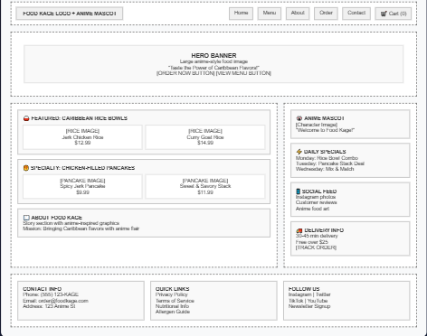

FoodKage: A simple, anime-inspired online restaurant experience.
Reason for Name: The name is a play on “Hokage” from Naruto, suggesting food royalty with a fun, anime twist. It’s memorable, unique, and culturally intriguing for anime fans and food lovers alike.
Optional Domain: foodkage.com
FoodKage is a casual online restaurant offering affordable, delicious anime-style meals starting with Caribbean rice and pancakes with chicken filling. The website aims to:
Mobile View:
Desktop View:
